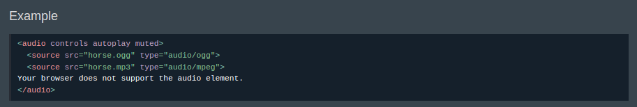
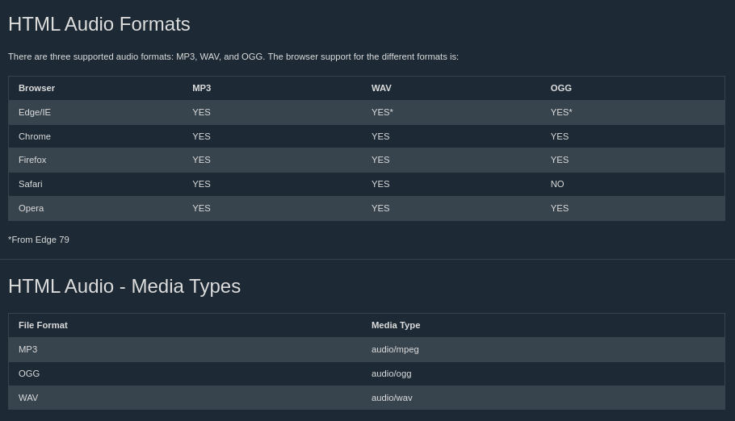

HTML Audio
Digunakan untuk memutar audio disebuah halaman web
- controls attribute memungkinkan kita untuk mengatur audio seperti play, pause dan mengatur volume
- sourcec digunakan untuk mengarahkan ke audio mana yang akan digunakan
- di browser yang tidak mendukung fitur audio, kalimat didalam tag audio akan ditampilkan
Contoh Source Code

Audio & Types
